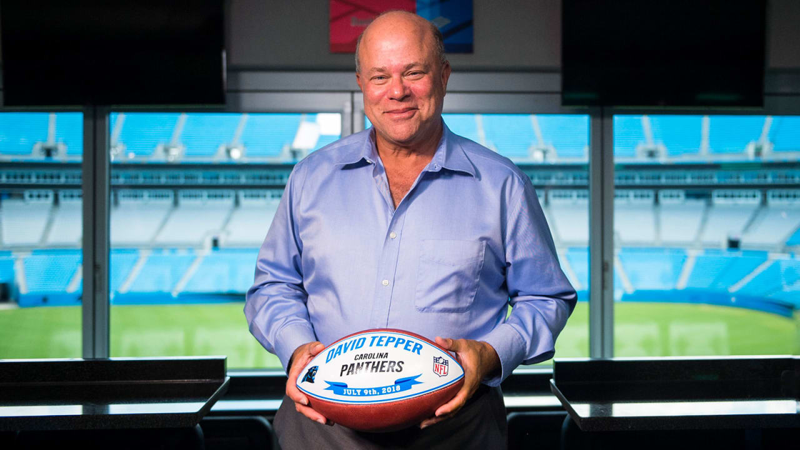

Carolina Panthers Staff
The Carolina Panthers were founded on October 26, 1993 and has had a handful of tremendous athletes that have played for the team since then. Located in the Queen City, Charlotte NC, this team has gotten together one of the best fan bases ever seen in NFL fanbase history. Owner David Tepper wants our fan base to finally start expereiencing the win now mentality, and this development project is the one of the early steps towards it. We want to hear from you, our lovely panthers fans! Our staff would love to know how you feel about this proejct as well as giving us recommendations and ideas as well! The sign up section on this website will let you fill out your information and let us know how you feel! We will do our best to reach back out to each and every one of you, so please be patient! For more contact information, visit our team website, panthers.com! And as always, KEEPPOUNDING!
CEO David Tepper & Founder
800 South Mint Street Charlotte, NC 28202-1502 USA
Panthers.com